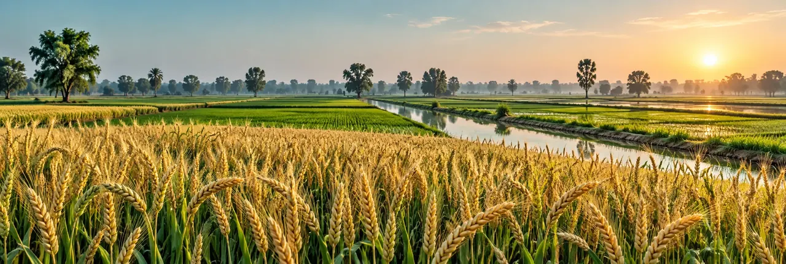

AI-generated illustration · not field evidenceFarm overview
Concept illustrations generated with AI. Actual satellite results are labelled separately.
Fields requiring a visit
Next actions
Monitoring coverage
Start with your own farm
Register a field, add a dated scouting visit, then record follow-up visits using the same sampling method.
Example records are labelled and kept separate from an empty workspace. Use Live satellite check for opt-in scene lookup and polygon-based index calculation. No automated disease model is connected.
Field register
Field location map
Season & field profile
Record a scouting visit
Symptom assessment
Select a symptom to see possible causes and practical checks. This is a rule-based field guide, not a diagnosis.
Scouting history
Vegetation & moisture history
Add a geospatial measurement
Measurement ledger
Reproducible GIS workflow
- Use a reviewed field boundary in WGS84; reproject for area calculations.
- Use atmospherically corrected Sentinel-2 L2A imagery. Mask cloud, cirrus, shadow, snow and invalid pixels using SCL.
- NDVI = (B08 − B04) / (B08 + B04).
- NDMI = (B08 − B11) / (B08 + B11); align 20 m and 10 m grids explicitly.
- Exclude boundary mixed pixels; report the median, cloud and valid coverage for each date.
- Compare the same field and crop stage, then verify anomalies on the ground.
Small fields and narrow plots may have too few uncontaminated pixels for dependable monitoring.
Quality rules in this portal
Cloud cover above 20% or valid coverage below 70% flags a measurement for review. These configurable-workflow defaults are screening rules, not universal scientific thresholds.
Charts retain flagged values with a different colour, but comparisons exclude them. No crop health score is inferred from a single NDVI threshold.
Sentinel-2 product documentation ↗Pesticide application record
Review effects, not assumptions
Integrated pest management
Scout first. Identify the pest, compare with a local action threshold, protect beneficial organisms and consider cultural or biological controls. Rotate modes of action only according to current label and extension advice.
Application & harvest interval ledger
Dates calculate elapsed label intervals only. They do not certify legal compliance, residue safety or readiness to harvest. Product-specific label rules take precedence.Pakistan seasonal planning calendar
Illustrative lowland planning ranges, not planting instructions. Variety, elevation, irrigation and local advisories change dates. Spring and autumn maize are listed separately. Field-specific dates in your register override this calendar.
Your field milestones
کسان کی اردو رہنمائی
کسان کی رہنمائی
اپنے کھیت، فصل اور بوائی کی تاریخ درج کریں۔ فصل کا باقاعدہ معائنہ کریں اور متاثرہ پودوں کی تعداد محفوظ کریں۔ اسپرے سے پہلے کیڑوں کی شناخت اور مقامی زرعی ماہر سے تصدیق ضروری ہے۔ دوا کے لیبل کے مطابق حفاظتی لباس، دوبارہ داخلے کا وقفہ اور کٹائی سے پہلے کا وقفہ اختیار کریں۔
سیٹلائٹ اشاریے فصل کے دباؤ کا اشارہ دیتے ہیں، بیماری یا دوا کے اثر کی حتمی تصدیق نہیں کرتے۔ ریکارڈ اسی براؤزر میں محفوظ ہوتا ہے؛ بیک اپ ضرور ڈاؤن لوڈ کریں۔
Official knowledge & extension links
Punjab crop production guidance ↗ · Pest scouting and IPM brochures ↗ · Pest forecast bulletins ↗
Punjab crop life calendar (historical reference) ↗ · Copernicus Sentinel-2 documentation ↗
District directory is a selection aid, not an authoritative current boundary register. PBS administrative geography reference. Custom district names are supported.Reviewed 21 October 2026. Punjab references do not establish recommendations for every Pakistani agroecological zone. Use your district agriculture extension office for local variety, threshold, pesticide and planting advice.
Pakistan agricultural intelligence
GIS · STATISTICS · POWER BIProvincial proportional-symbol map
Symbols sit at approximate province centres, not field locations or administrative boundaries. Size represents the selected measure. Click a symbol for values.
Provincial comparison
Production share
Seasonal yield comparison
Area–yield relationship
Province-level association is not evidence of farm-level causality.Provincial evidence table
District / regional farm statistics
Computed only from your registered fields. Not representative district or national survey estimates. Symptom counts pool the latest visit per field; sampling designs may differ.
Power BI handoff
Export a field-level fact table with province/district, crop, dates, area, observed symptoms, measured indices and actual/expected yields. Import the CSV in Power BI Desktop, set numeric types, then use the supplied DAX measures.
This is an export integration. No live Power BI report or .pbix file is embedded.Crop-cut yield estimator
Enter representative quadrat samples, one per line: fresh harvested mass (kg), sampled area (m²). Use the same crop, harvest date and grain-moisture method.
Yield = total mass ÷ total sample area × 10,000 × (100 − measured moisture)/(100 − target moisture). This extrapolates samples; it is not a guaranteed field harvest.Train & evaluate a yield model
Upload labelled historical data for one crop and one growth-stage protocol. CSV: crop,district,season,stage,ndvi,yield_kg_ha,source. At least 15 rows, 3 districts, and NDVI variation within each training fold.
GeoAI model card & deployment gates
Before operational deployment: validate on independent seasons and spatial blocks, compare with climatology and agronomist baselines, check sensor/stage consistency, quantify uncertainty, and monitor drift. Disease classification requires expert-labelled images and a separately validated model; this portal does not claim one.
Crop stress & issue atlas
ILLUSTRATIONS + FIELD EVIDENCEIllustrations explain symptom patterns; they are not photographs or AI diagnoses. Select a card for ground checks.
Observed symptom distribution
Latest observation per field. Missing visits are shown separately; zero observations do not mean healthy crops.Geostatistical field exploration
Latest visit in the preceding 7 days per field, same crop. At least 5 distinct field coordinates are required for descriptive distance analysis.
Empirical semivariogram: γ(h) = ½ mean[(zᵢ − zⱼ)²], with z = symptomatic plants (%). Distance uses great-circle kilometres. Bins are descriptive, with no fitted variogram, significance test, kriging surface or causal claim.Field evidence map
Markers and imported boundaries are coloured by observed symptom incidence: green <10%, amber 10–25%, red >25%; grey = no visit in the selected window. These are display bands, not economic action thresholds.
Schedule a farm activity
Activity calendar
Import the file in your calendar app. This portal does not create cloud reminders or send notifications. Due dates are all-day events.
Activity register
Field water-budget planner
Enter locally measured or sourced values for an upland-crop planning period. This is a simplified water-balance calculation, not sensor-based automatic irrigation.
Water requirement breakdown
ETc = ET₀ × Kc × days. Net deficit = max(0, ETc − effective rain − usable root-zone water). Gross depth = net deficit ÷ efficiency fraction. Volume = gross mm × field hectares × 10.
FAO crop coefficient reference ↗Saved water plans
Mark a plan applied only after the field operation. Calculated volumes are estimates, not metered water use.Record costs & sales
Recorded farm balance
Recorded income minus expenses is a cash-ledger balance. It does not establish full farm profit; missing transactions, inventory, depreciation, credit, taxes and unpaid family labour can change results.
Yield × price scenario
Enter your own price. No live market quotation or guaranteed yield is supplied.
Scenario & sensitivity
Sensitivity cells show assumed revenue minus the same entered costs. Yield and price vary by ±20%; this is a scenario grid, not a probability forecast.Transaction ledger
Field action centre
Rule-based reminders calculated from your records and Pakistan dates. Checks run when the page renders or you refresh. No background surveillance, SMS or push notifications.
Connect a field to Sentinel-2
PUBLIC SATELLITE DATA · NO ACCOUNT PASSWORDUse a reviewed field polygon for field-level analysis. A point and an area value can find nearby scenes but cannot define a verified field boundary.
Satellite scenes
Scene cloud metadata covers a whole tile. Actual clear coverage inside your field is checked separately. Searches show up to 12 newest matches; no continuous monitoring service is running.Field verification & satellite findings
Field NDVI raster
Analysis provenance
Successful quality-screened measurements are added to Satellite & index records with scene ID, acquisition date, source and screening metadata. Failed or insufficient analyses are not saved as valid observations.
Farm monitoring report
Import vegetation measurements
CSV columns: field,date,ndvi,ndmi,cloud,coverage,source. Use an existing field ID, ISO dates and values within the documented ranges. Quoted CSV values are supported.
Import field boundary
Select a field, then import a GeoJSON Polygon or MultiPolygon feature in WGS84 longitude/latitude. Coordinates are checked; topology and cadastral accuracy require GIS review.
Backup & restore
Everything is stored in this browser. There is no account sync, shared database or unattended monitoring service. Back up regularly.
Restore replaces this workspace after confirmation.
Workspace
No photos are sent to AI and no automated diagnostic claim is made. A production national monitoring service would need authenticated shared storage, a reviewed agronomy knowledge base, satellite processing and validated disease models.